grafana-plugin, 2026-10-23. Env b1-plugin-bridge (ouo-env, Grafana 13.2.1, admin / testing567),
before = plugin 0.7.0 with rum-api from main, after = plugin 0.8.0 with this branch's rum-api. Two real sessions:
a bridged Sentry session (golden capture ios-rn-8.30.0/realtap, @sentry/react-native 8.30.0, 6 real taps, re-sent to the env's bridge;
before F3A44DE4…, after 53FBD4B3…, the same envelopes with re-keyed ids) and an ouo SDK frames session
from examples/sentry-mobile in ouo mode on my own iPhone 18 Pro simulator, driven by the perf XCUITest journey (19 real
taps; before 374ab806…, after fd3ae381…, the same journey run again so the new chunks carry masked).
Screenshots: headless Chrome (Playwright), 1600 x 1000, dark theme; every mp4 segment request delayed 1.5 s in both runs so loading is visible.
| Item | Before (0.7.0) | After (0.8.0) | Tests |
|---|---|---|---|
| C1 stack trace | type and message only | "Show stack trace (13 frames)" on errors in the activity list, Timeline and Logs | StackTrace.test, ReplayActivity.test, LogsPanel.test |
| C2 header | user, platform, service only | Device iPhone19,2 · OS iOS 27.0 · Build 1.0.0 (build 6) · Environment development (rum-api context) | session.test, SessionDetail.test, Go TestSessionContext |
| C3 frames taps | "Taps 0" with 91 touches | "Taps 19" (19 taps scripted) | SessionDetail.test |
| C4 first screen | Navigation Home at −3.6 s, above "Session start" | "Session start" first, Home at +0.0 s (tooltip keeps −3.6 s) | session.test, StackTrace.test (Timeline), SessionDetail.test |
| C6 trace names | 25 × HTTP GET / HTTP POST | GET /api/products/p-1002, POST /api/cart, … (rum-api root_url_path) | TracesTable.test, session.test, Go TestSessionTracesRootURLPath |
| C7 exception log line | exception demo_action=handled-error (or session_previous_id=…) | Error: sentry-demo handled error: coupon service unavailable + stack | LogsPanel.test, session.test |
| C8 masking | "masking is applied on the device by the recording SDK" (the demo records unmasked) | badge "not masked" (Sentry, maskAllText: false) / "masked" (ouo SDK) | masking.test, SessionDetail.test, Go TestMaskedFlag |
| B1 layout | Timeline panel + replay | toggle off: replay + activity list only; OUO_FEATURE_TOGGLES_ENABLE=sessionTimelinePanel brings the Timeline back (verified through compose provisioning) | featureToggles.test, SessionDetail.test, AppConfig.test, helm template |
| F4 seek | black stage "Loading segment 6…" | previous frame stays, small "loading segment 6…" tag | VideoPlayer.test, video.test |
| F4 one clock | same tap +11.5 s (Timeline) vs +11.2 s (list) | +11.4 s in both, player label on the same clock | SessionDetail.test, StackTrace.test, VideoPlayer.test, ReplayActivity.test |
Commands: npm run -w plugins/ouo11y-rum-app test (23 suites, 155 tests), typecheck, lint (0 errors, 3 old Select warnings), build;
cd services/rum-api && go vet ./... && go test ./... (pass, including the MinIO S3 tests); helm lint deploy/helm/ouo.
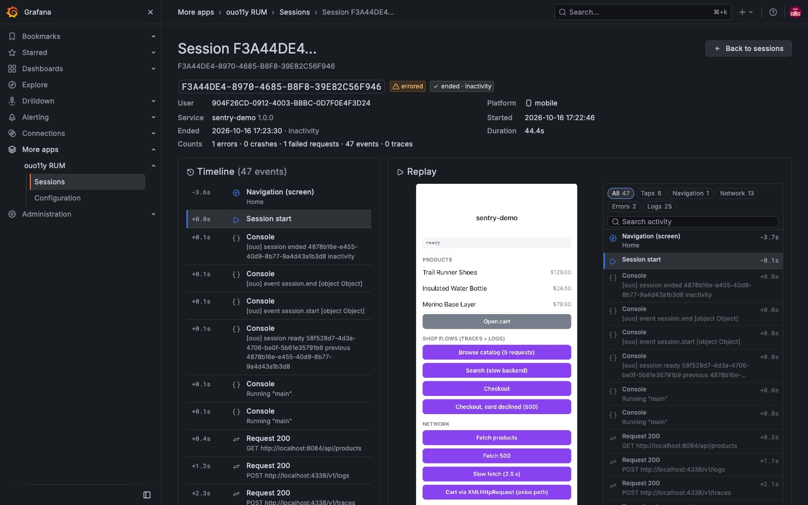
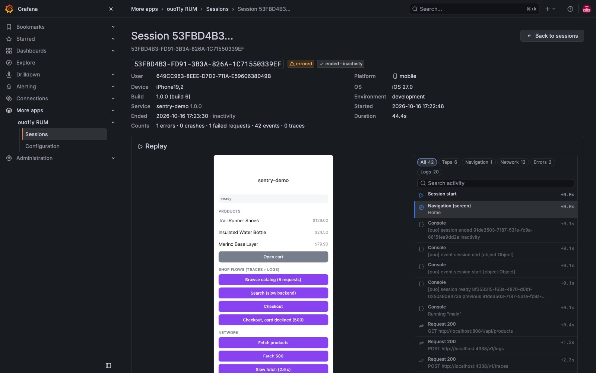
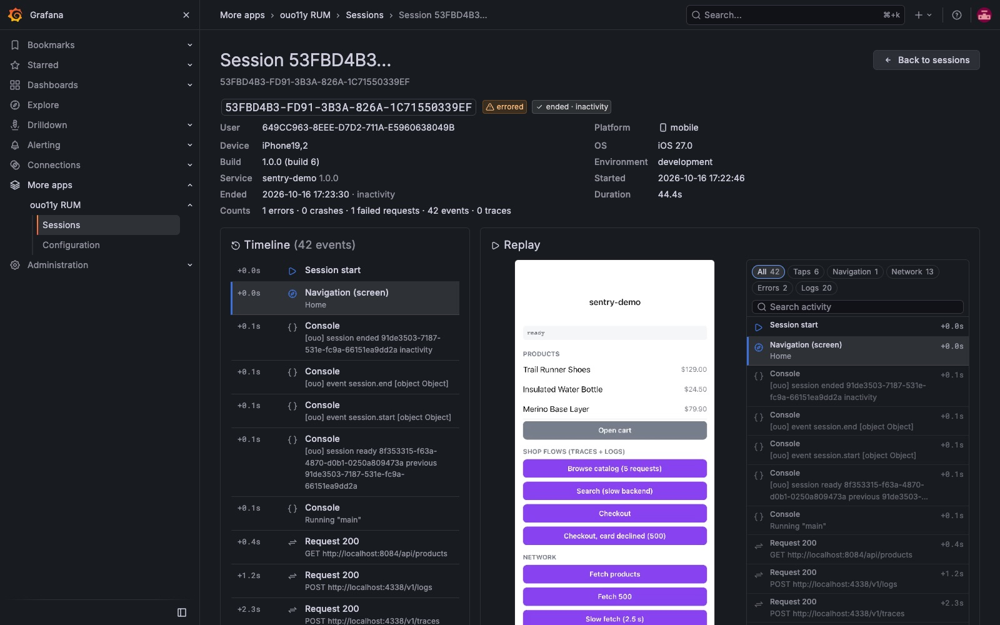
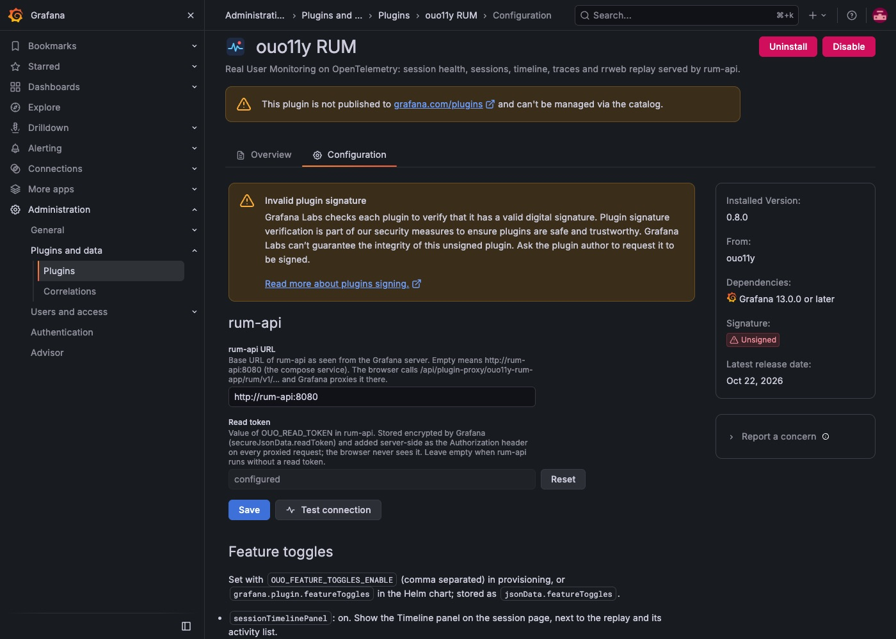
$ OUO_FEATURE_TOGGLES_ENABLE=sessionTimelinePanel deploy/envs/ouo-env up b1-plugin-bridge
$ curl -u admin:… grafana.b1-plugin-bridge.ouo.localhost/api/plugins/ouo11y-rum-app/settings | jq .jsonData
{"featureToggles": "sessionTimelinePanel", "rumApiUrl": "http://rum-api:8080"} # without the variable: "featureToggles": ""
$ helm template … --set 'grafana.plugin.featureToggles={sessionTimelinePanel}' → env OUO_FEATURE_TOGGLES_ENABLE="sessionTimelinePanel"
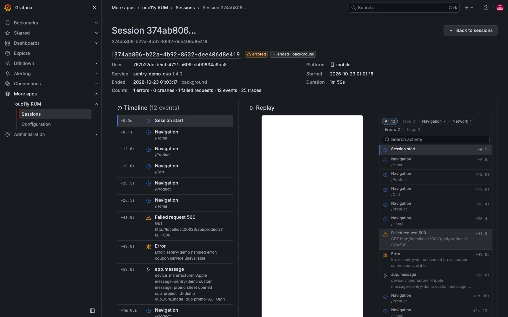
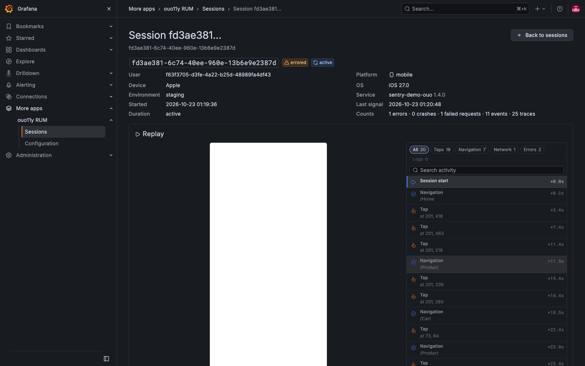
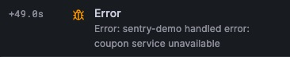
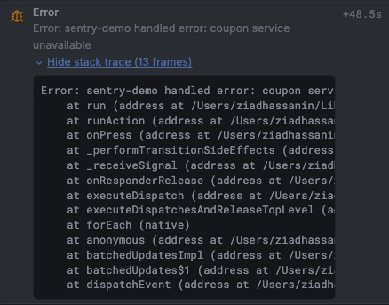
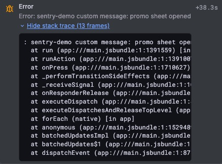
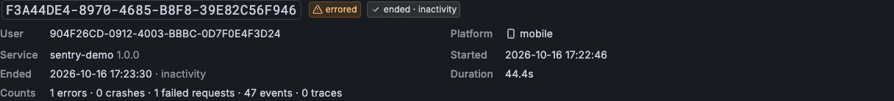
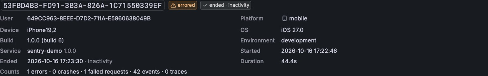
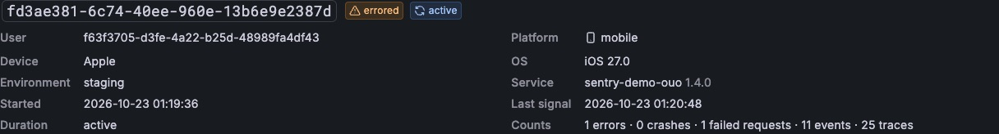
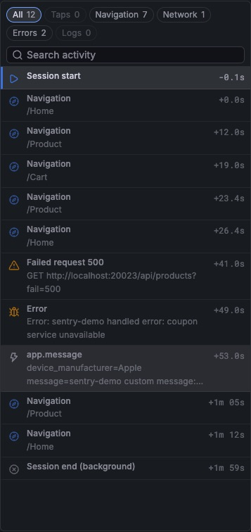
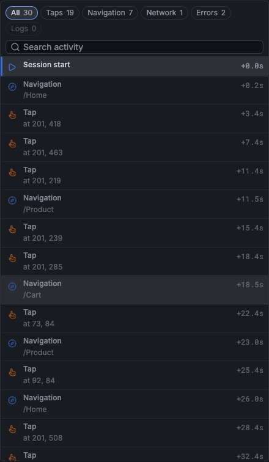
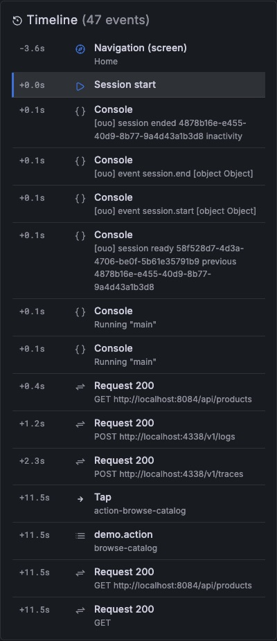
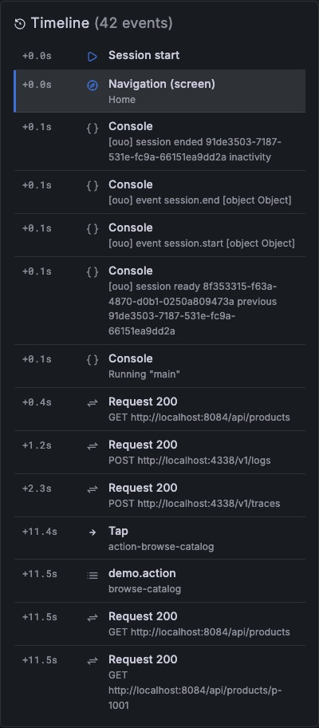
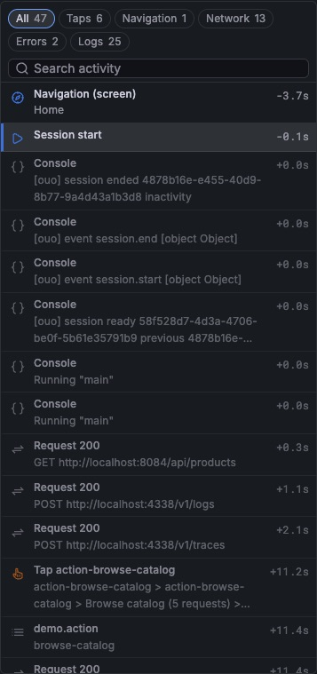
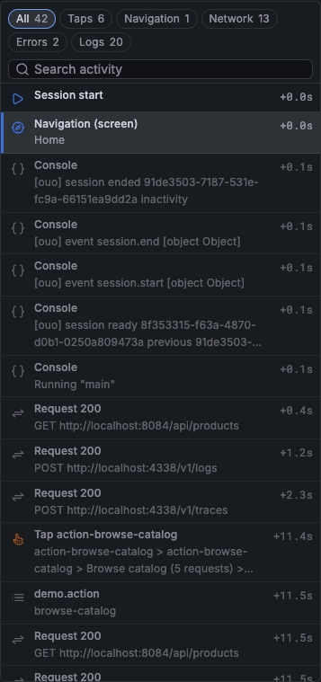
The tap now reads the same in both lists: both use the session start as zero, and the Timeline shows a tap at its touch start
(the time the list and the player use) instead of the ui.tap breadcrumb, which the SDK writes about 100 ms later when the
touch ends. The players' time labels add the replay's offset from the session start (+0.3 s on the frames session).
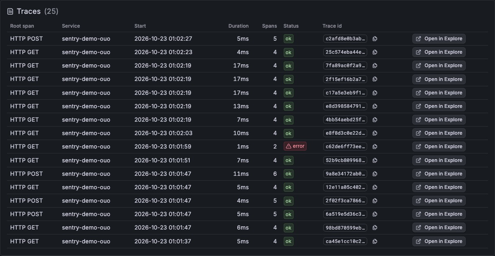
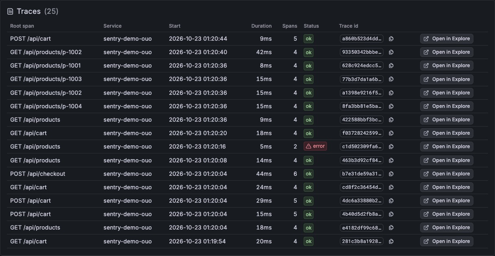
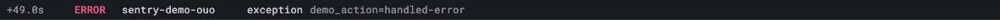
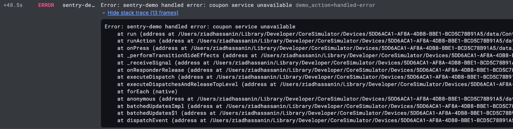
Before, both info lines were fixed sentences: "masking is applied on the device by the recording SDK" (video) and "text, inputs and images are masked on the device before upload" (frames), although the demo's Sentry replay is recorded with masking off.
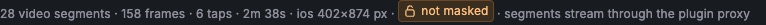
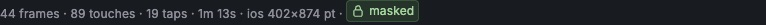
GET /v1/sessions/53FBD4B3…/replay → "masked": false, chunks[0..27].masked = false GET /v1/sessions/fd3ae381…/replay → "masked": true, chunks[0..10].masked = true chunks stored before this rum-api: no flag → "masking unknown"
Click on an activity row 6 segments ahead, every segment request delayed 1.5 s (same for both runs).
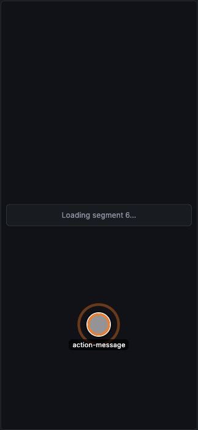
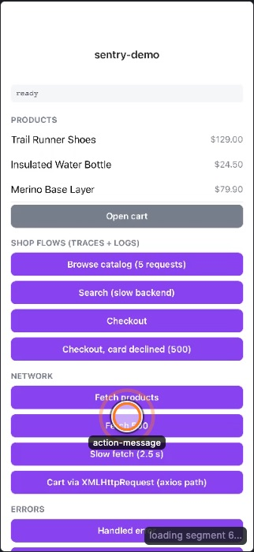
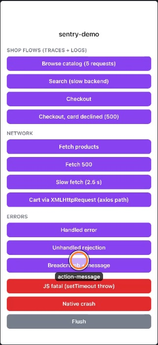
Neighbouring segments (previous and next) are mounted and preloaded, so playing on and stepping back never wait; a far seek keeps the
segment that is on screen mounted and visible until the new one has fired loadeddata (not seeking) or seeked.
masked (C8), session detail context (C2: OS and environment are dropped from timeline attributes as noise, so the plugin could not read them), trace root_url_path (C6: Tempo search only returns the root name). With an older rum-api the plugin shows "masking unknown", the device and build rows from timeline attributes, and the raw trace names.sentry mode sent nothing to the bridge (open, project/kb/env-test-sessions.md). The capture is a real SDK run with real taps; its timestamps are from 2026-10-16.